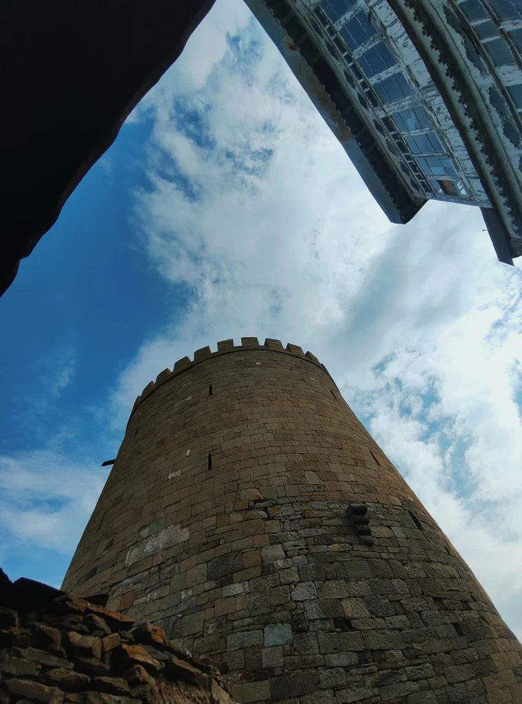
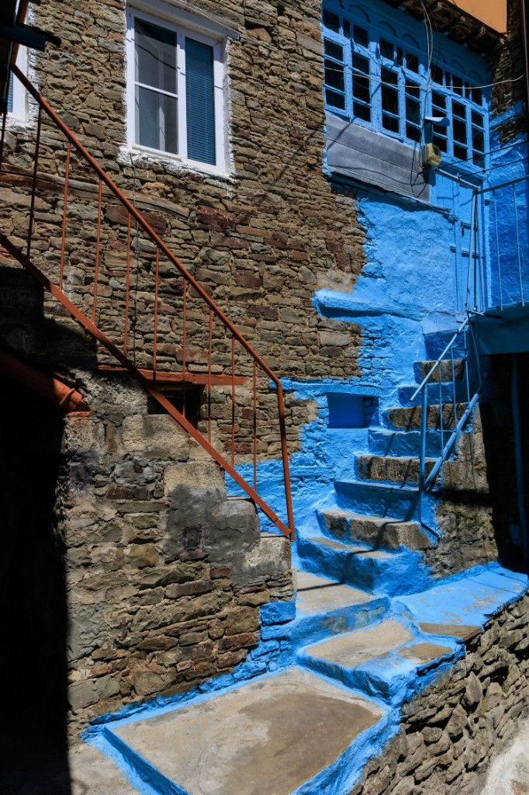
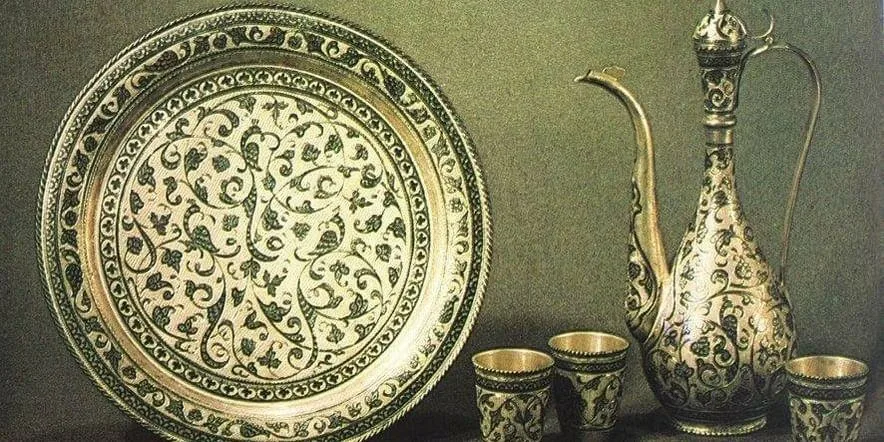
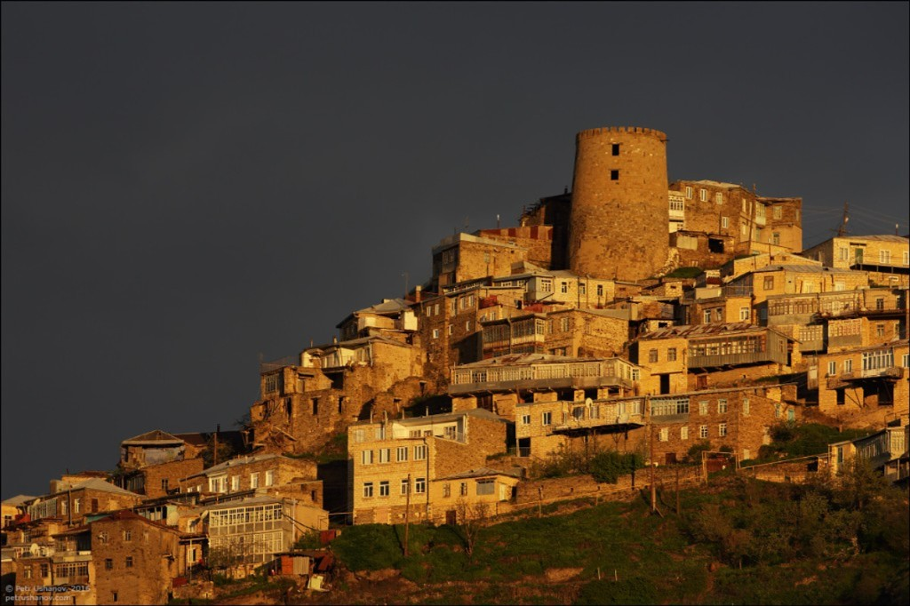

Древняя история
Старые улицы, башни, каменная архитектура и память о прошлом аула.
Добро пожаловать в Кубачи
Найдите местных гидов, узнайте о достопримечательностях и забронируйте авторский маршрут по селу и окрестностям.
О селе
Кубачи привлекает не только красивыми видами, но и живой историей, которую здесь можно почувствовать в старых кварталах, мастерских и музейных пространствах. Это место, где ремесло, архитектура и местные традиции до сих пор остаются частью повседневной жизни.
Старые улицы, башни, каменная архитектура и память о прошлом аула.
Знаменитое искусство серебра, орнамента и ручной работы.
Панорамы, тишина, узкие проходы и особый ритм жизни.
Экскурсия с местным гидом помогает увидеть не только места, но и смысл за ними.
Локальные проводники
Выберите проводника в списке — справа откроется его программа, теги и контакты. Данные подтягиваются из админки.
Форматы
Если вы не знаете, с чего начать, выберите один из готовых форматов прогулки.
Подходит для первого визита: прогулка по селу, основные точки и короткое знакомство с историей.
Более глубокий маршрут с мастерской, музеем, старой частью села и панорамными точками.
Экскурсия для тех, кому особенно интересно серебряное дело, орнамент и работа мастеров.
Как это устроено
Каждая прогулка может быть спокойной и обзорной или более насыщенной, если вам хочется глубже погрузиться в историю и ремесленные традиции Кубачи.
Аудитория
Откройте для себя богатое наследие и природную красоту древнего села

Величественный символ древнего села

Лабиринты истории и архитектуры

Мастерство резьбы по камню прошлого

Всемирно известные серебряные изделия

Мирный уголок и духовный центр

Цитадель с видом на вечные горы
Познакомьтесь с орнаментом, мастерскими и живой традицией Кубачи
Знакомство с узорами и символикой местного ремесла
Красота ручной работы, линии и детали
Инструменты, процесс и живая атмосфера ремесла
Связь старого аула и художественного языка Кубачи
Мастера, традиции и культурная память села
Спокойное знакомство для гостей с детьми
Культура и память
Три музейные точки села Кубачи — на интерактивной карте Яндекса. Выберите место слева, чтобы сфокусировать карту и открыть подсказку; клик по метке подсветит карточку в списке.
Экспозиция и продукция художественных промыслов: знакомство с наследием серебряного дела и декоративно-прикладного искусства Кубачи.
село Кубачи, ул. Юсупа Ахмедова, 94
Музей, посвящённый жизни и творчеству выдающегося дагестанского поэта и общественного деятеля.
село Кубачи, ул. Юсупа Шамова, 48
Филиал Национального музея Республики Дагестан: мемориальная экспозиция в домашней обстановке аула.
село Кубачи, ул. Юсупа Ахмедова
Чтобы карта реагировала на список слева, добавьте ключ JavaScript API Яндекс.Карт в переменную окружения
YANDEX_MAPS_API_KEY или в атрибут data-yandex-api-key у секции.
Список соответствует категории «Музеи» в Яндекс.Картах по селу Кубачи. Режим работы и билеты уточняйте у учреждений.
Вопросы
Обычно от 2 до 4 часов, в зависимости от маршрута и ваших пожеланий.
Да, прогулку можно адаптировать под интерес к истории, ремеслу, панорамным видам или семейному формату.
Да, сайт как раз рассчитан на то, чтобы помочь выбрать понятный стартовый маршрут.
Да, для семей лучше выбрать более спокойный и короткий формат прогулки.
Лучше связаться заранее, чтобы согласовать время и формат экскурсии.
Это зависит от выбранного гида и программы, но такие точки можно включить в маршрут.